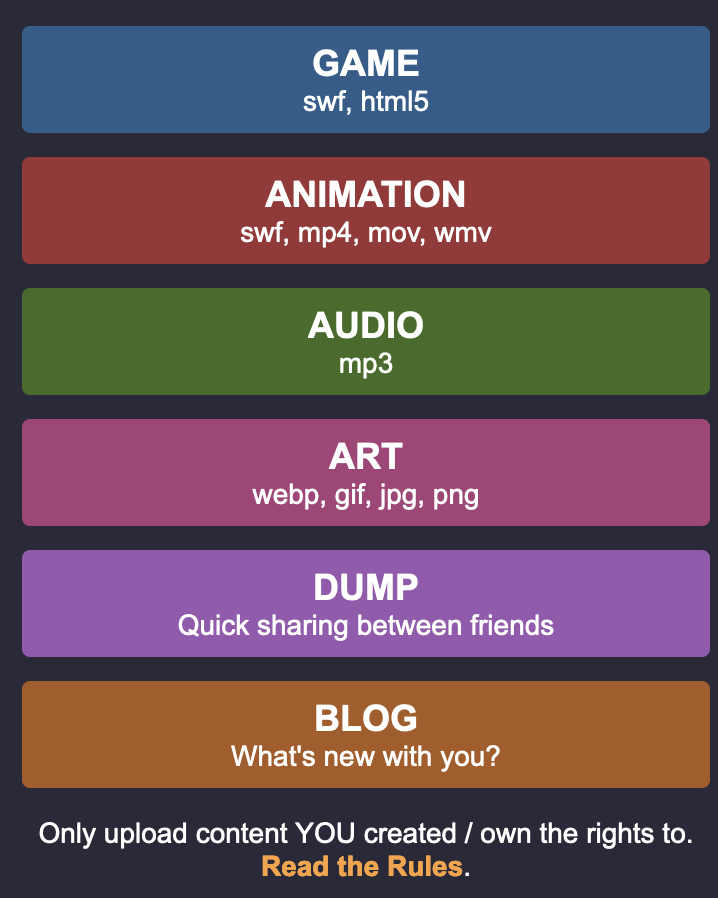
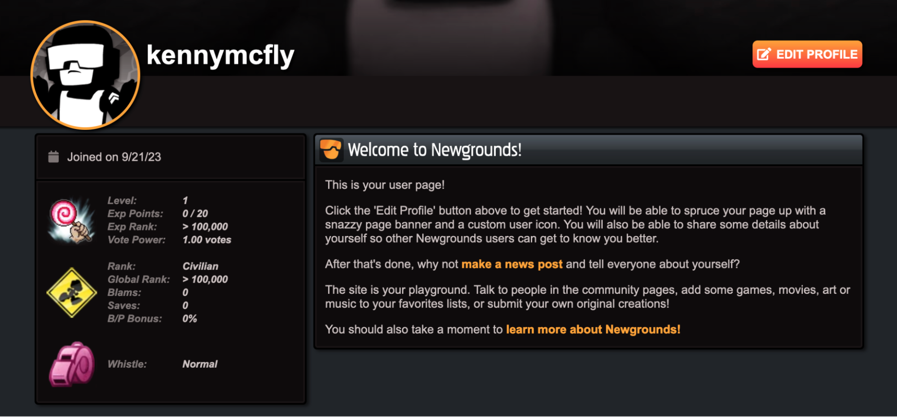

Project Brief
What is the problem in brief?
Animation is a highly labor intensive process, tasked with bringing to life what cannot be filmed or photographed. It is an industry of dedicated creatives, which in over a century, have collectively pushed the bar on both technical and artistic achievements consistently. Despite the industry evolving as a whole, animating is still an incredibly individual process and can be very isolating especially for new animators.
While animators who have been working for longer are a little bit better about finding events which connect them with their peers, it's still a space that is very scattered and difficult to break into. Oftens time art events and general social media are the primary way that people connect but even those the details are hard to find and aren't in one place. These events also require a good amount of initial time and capital which isn't something that a lot of animators have in excess. So the problem becomes that members of the community are isolated and need a way to connect that is more accessible to anyone and can incorporate already existing methods of creating community.
How will your project change the status quo? For whom?
There are few different ways our project will change status quo for animators.
For newer animators, this would be a centralized space to connect with other animators and see any events happening near them. This eliminates the need to cultivate experience in finding these events (ie. following certain social media accounts or event organizers).
For all animators, this will make a space where they don't need to spend a lot of time and effort to meet people. While events like film festivals and meetups would still be posted (and those would need someone organizing them), our project aims to facilitate easier 1:1 interactions with animators who are in the same area without the need for an extensive set up or management.
What is (at least) one naïve design idea (rough sketch)? How does this idea address what you see as the core problem?
Animator's Map
The idea is that this would be a site which displays animators and events that are occurring near your area. For the events aspect, the primary goal is consolidation of all events in one space. For animator profiles, the site would allow verified animators to join and put up a profile including contact information and then people could contact each other to collaborate or start forming more social connections.
Animator's Cafe
This idea is creating a permanent space where animators could come to co-work or socialise and a place where events could be held more often. We want to include specific tools which animators use to make the space more functional.
LinkedIn for Animators
Because they're posted on a variety of spaces, animators, especially new one, can miss open calls or collaborative opportunities in the field. This would create a site where it's more consolidated and would be more tailored to animators (ie. a space to post their demo reel).
Event Building Tool
One thing which is a barrier to connection is the amount of effort it takes to plan events form organizing vendors to finding a space to host it so this site would function similarly to the site Zola and streamline the event planning process so that more people might want to host events.
Reanimation Organizer
One of the ways animators connect is by doing reanimation projects as they're opportunities for collaboration and social interaction. This would be a site which specifically organizes these efforts so that it's accessible to more people.
Inspirational Design
The list of products and ideas we found inspirational
- Meetup.com
- Website for organizing and marketing social events
- Shrek Re-Told
- Community run re-production of “Shrek” by a global group of independent animators and creatives
- Animationguild.org
- Union for Animators
- Aardman worker co-op
- Animation studio which made wallace and gromit
- Recently became a worker co-op in 2018
- Employee ownership trust model
- Instructables
- Website for aggregating how-to instruction manuals
- Zola
- Wedding planning site, useful if we go the event planning route
- Community Organizers (example from ADE, Dudley Street Neighborhood Initiative)
- A source of inspiration could be grassroot on-the-ground community organizing that takes the wants and needs of a community and uses collective action to make a change in that direction.
- Community building
- MYCOOP
- App to organize various aspects of building a co-op
- Short Verse
- Website that provides animators with inspiration by showing notable shorts
- Newgrounds
- Showcases flash animations and operates as a social media site. It has decreased in popularity since its prime in the early 2000s.
- Builds community amongst animators and provides them with a platform to share their work
- CiviCRM
- Software which tracks memberships, event planning, marketing, fundraising, etc.
- Nextdoor
- Building connection/community based on location.
- Boston Film Festival
- A local event for film
- Resonant.coop
- Worker coop model for music streaming
Unions
The Animation Guild (TAG) stands as a testament to the transformative power of collective efforts in the animation industry. Using TAG as a blueprint, the team can lay a strong foundation for their project, which aims to uplift independent animators. Here's how:
Solidarity and Unity:
TAG boasts a storied legacy of championing animators' rights, from brokering improved working conditions to guaranteeing equitable pay. Their platform can act as a beacon for independent animators, championing their needs and rights. The Guild's proactive approach to negotiate terms for streaming television, an emerging medium, reflects adaptability and vision.
The American Animation Institute, birthed by TAG, is dedicated to disseminating knowledge about the animation craft. Their platform can proffer resources, tutorials, and workshops, assisting animators in honing their skills and aligning with industry benchmarks.
TAG's routine membership assemblies and the democratic election of an Executive Board accentuate the essence of active community participation. Their platform can facilitate regular dialogues, feedback rounds, and potentially even elections for community figureheads or representatives.
TAG's emphasis on collective bargaining agreements (CBAs) ensures the safeguarding of animators' rights. While their platform might not delve into formal CBAs, it can furnish resources or templates for contract negotiations, ensuring animators receive fair compensation and their rights remain intact.
TAG's endeavors to broaden its jurisdiction, transitioning from traditional animation to computer graphics and from local to global studios, underscore the importance of adaptability. Their platform can be inclusive, accommodating diverse forms of animation and welcoming animators from varied backgrounds and locales.:
TAG extends financial aid resources and addresses workplace concerns, prioritizing members' well-being. Their platform can feature a dedicated support segment, be it financial, mental health resources, or addressing workplace disputes. TAG's collaborations with a plethora of animation studios present members with a myriad of opportunities. Their platform can bridge independent animators with potential clients, studios, or collaborators, paving the way for new horizons.
Newgrounds
Newgrounds is a website that describes itself as “a community of artists, game developers, musicians, voice actors and writers who create and share some of the best stuff on the web”. On this site, the user's art is the center of attention. The design of the website itself is dark and simple, drawing the eye immediately to the art. Showcasing art is not the only way this website aims to foster community. On the left side of the main page, there is a list of upcoming events. These events include meetups and art collaboration opportunities. Our project will take inspiration from Newgrounds by ensuring that the art work is our priority, and by making community building events and opportunities as accessible as possible.
Newgrounds homepage
Not only does it showcase the work of artists, but it also operates as a form of social media & networking. Social media plays a large role in the lives of independent artists as it provides them with a platform to share their work and get inspiration from others. That means it is important for a community building site such as Newgrounds to function as a social media site as well. Users can comment on and interact with artwork, follow friends and artists they like, share news with each other, and send private messages. All of these elements foster community. There is even a point system built into the site that encourages interacting with content and posting your own. You can level up, increase in rank, and gain XP points, all of which aids in the building of community.
The site is easy to navigate. You can upload your own art with a few clicks of a button, making it easy to engage. If you want to foster community, you need to make the tools to do so as accessible and intuitive as possible so you are inviting people to engage, not scaring them away. New grounds is an excellent site to showcase the art of community building, especially in the independent artist community.
 Zola
Zola is a very popular wedding planning website which offers multiple different services for couples planning their wedding.
Menu of different services offered
This was one part of the website that I thought was really good for us to draw inspiration from for a few different reasons. First, we also want to offer a variety of services so that our platform would be comprehensive and essentially be a one-stop shop for planning. Second, this gives a good idea of how to quickly advertise our services to people so that the value is concise and clear.
Vendor lists for various aspects of wedding planning
Another interesting aspect of this site is the customization features. Not only do they have multiple quizzes which the user can take to filter down their vendor options, they also have an extensive database of potential vendors for people along with their prices. In a way they're giving their user a checklist and then all the means to ensure that the list is accomplished.
Booking option for advice from their experts.
While they do have a ton of free options related to planning, they do also offer more specific expert advice for people who might want more help than being given a list of vendors to explore. This is an interesting idea for us to explore as having a staff that specializes in event planning or co-op organization might be a big asset. This is a paid service through Zola and a big part of what we want to do is cut costs for these smaller organizations so we would need to think of a different way to fund that.
Boston film/Animation festivals
Boston already has a thriving community of small, mid sized and large film festivals catering to both film and animators.

The boston film festival has been held annually since 1985, and has hosted work from many famous filmmakers including Jodie Foster, Al Pacino, Tommy Lee Jones, and Ridley Scott. It's structured More recently, there a several smaller and more locally based film festivals throughout Boston, catering towards niches.
Grassroots Community Organizing
Even though our focus in UXD is primarily on website design, I believe there are a lot of things we can learn from organizations that are doing the in-person version of what we’re trying to accomplish. Since our ideas surround building community with animators I thought it would be interesting to look at an organization doing community organizing work in Boston, specifically the Dudley Street Neighborhood Initiative (DSNI). According to their website, DSNI “empower[s] residents of the Dudley Neighborhood of Roxbury and North Dorchester to organize, plan for, create and control a vibrant, diverse and high-quality neighborhood in collaboration with community partners.” Part of what makes DSNI so successful is that they were created by the same people who they were trying to help. This allowed them to gain the trust of the people they wanted to work with which led to creating change that was well received because it so deeply reflected the desires of the community. I think this is a key principle to remember as we embark on our work; include the user at the core of our product in a meaningful way that gives them real power to influence our platform. I also think we can learn something about how DSNI scales. They started small and built up to big change. This is a good reminder for us to think about the scope of our project and the kinds of interactions we hope to foster knowing that there is more we can grow to do more if desired by our users. We will grow with our users.
Consent Form
Hello! We are a small group of students from Olin College of Engineering (in Needham, MA) taking a class on user experience design, and we have chosen to explore different types of planning (ie. co-ops, events, etc.) from the perspective of smaller, independent artists. In order to do this, we would like to interview you for information about yourselves and your work, as well as ask for your feedback on ideas.
The time commitment would be for a single meeting that can be as short as 15 minutes or as long as 45. That meeting would primarily consist of conversations with you in whatever format is most comfortable, in-person, phone calls, or video conferencing (via Zoom). We hope to be able to interview you in person at a public location convenient for you, but understand that that is not always possible.
When we are collecting information, we will use pseudonyms to keep participants' identities anonymous, and we will get explicit permission before taking any notes, photos, videos, or audio recordings. We do not plan to share this with anyone and if you prefer we can delete all of the information when the project is finished.
In the interest of full disclosure, there is no compensation or direct benefits involved. We only hope that you will take your time to help us with our project. Our focus will be on going through the design process with your input and not on creating tangible artifacts.
TLDR: Engineering Design students hoping to learn about designing with independent artists, working on facilitating community events or artist co-ops. No compensation $, focused on learning about the design process and not producing finished products.
If you have any questions, please feel free to reach out to our team via email [smadan@olin.edu] or contact our lead professor Amon Millner [amon.millner@olin.edu ].
Thank you so much for your time. We look forward to talking with you!